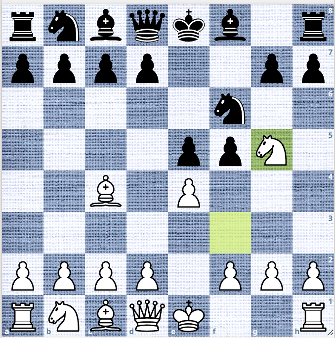

How Does Graph Chess Handle Initiative?
This article is part of Graph Chess, an approach to describing and analyzing chess positions using relationships between pieces, pawns, and their possible roles. The ideas introduced here are individual concepts; their full connection and application are developed separately in the Graph Chess method.
Graph Chess and Initiative
This article discusses a traditional chess concept — initiative — and how Graph Chess handles it.
What Is Initiative?
In a broader sense, initiative is a threat or demand that forces the opponent to respond. It is not classified simply as a threat because a threat usually has a specific target, while an initiative does not necessarily have a target.
An initiative is a move that demands an immediate response from the opponent.
For example, consider the following position. It is White's turn to move. White plays Ng5, creating the possibility of checkmate or a fork on the next move. White has the initiative.

The player who can make a threatening or demanding move has the initiative. Initiative is generally considered a temporary advantage.
The position itself allows the player to take the initiative.
Initiative in Graph Chess
In Graph Chess, there is no separate concept of initiative.
This is because the graphs represent positive structures. When we move a piece, we consider the move as a graph transformation. It is not merely an ordinary transformation. We look for a carefully chosen transformation that leads to a better position.
This does not mean that positional weaknesses are ignored. Weaknesses are considered separately.
Consider a position represented by the three graphs. The position contains positive graph structures, but it may also contain positional weaknesses. We do not discuss those weaknesses here.
The positive graph structure provides a priority list of moves. Prophylactic moves are considered first, followed by attacking moves.
However, the availability of an attacking move is not sufficient. We must calculate the consequences of the move and evaluate the resulting position.
This is where Graph Chess becomes interesting.
After calculation, Graph Chess considers questions such as:
- Did the piece's MG and flexibility improve?
- Did the move achieve an objective?
- Was the move a tactical operation?
The first question considers whether the moving piece has improved its role and flexibility. The second considers the purpose or objective of the move. The third recognizes that the move may simply be a tactic or sacrifice.
Therefore, Graph Chess does not need a separate initiative concept to cover these situations. The effects of the move are evaluated through the graph structures and through calculation.
Maintaining the Graph Structure
The main objective is to maintain a healthy graph structure after the move, unless the position demands a tactical operation.
The Pawn Graph should remain free from significant weaknesses.
The Mobility Graph should maintain or improve the flexibility of the pieces.
The Coordination Graph should remain properly structured. If a tactical operation temporarily disrupts the coordination structure, the structure should be rebuilt after the tactical sequence.
Therefore, what traditional chess describes as initiative can be viewed in Graph Chess as a consequence of the position's graph structure and the moves generated from it.
Graph Chess does not need to identify initiative as a separate advantage. It identifies the available moves, their objectives, their tactical consequences, and their effect on the graph structure.